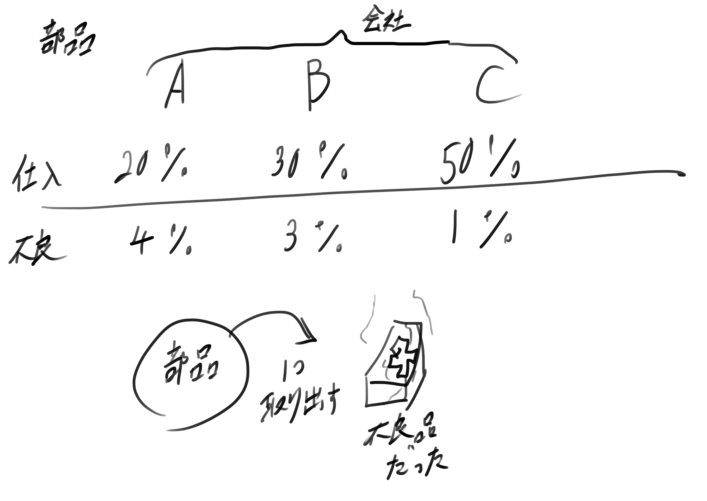

試行: 調査や実験
事象: 試行の結果，起こる事柄→これが起こる割合が確率
試行: 調査や実験
事象: 試行の結果，起こる事柄→これが起こる割合が確率
＊事象について(以下は1～6までの値を例に示す)＊
全事象 $\;\Omega\;$ 起こりうる全てを集めたもの (全体)集合 $\;\{1, 2, 3, 4, 5, 6\}\;$
事象 $\;A, B\;$ 試行の結果起こる事柄 $\;\Omega\;$の部分集合 $A=\{2, 4, 6\}\quad B=\{4, 5, 6\}, \quad C=\{1, 2\}$
和事象 $\;A\cup B\;$ $\;A\;$か$\;B\;$のどちらかが起こる 和集合$\;A\cup B\;$ $\;A\cup B = \{2, 4, 5, 6\}\;$
積事象 $\;A\cap B\;$ $\;A\;$と$\;B\;$の両方が起こる 積集合$\;A\cap B\;$ $\;A\cap B = \{4, 6\}\;$
余事象 $A^C$ $\;A\;$が起こらない 余集合$\;A^C\;$ $\;A^C=\{1, 3, 5\}\;$
空集合 $\;\phi\;$ 絶対起こらない事象 空集合$\;\phi\;$ $\;B\cap C = \phi\;$
$\;A\;$と$\;B\;$が互いに排反 $\;\Longleftrightarrow\; \quad A\cup B = \phi$
$A_1, \cdots ,A_n$が互いに排反 $\;\Longleftrightarrow\; \quad A_i\cup A_j = \phi\qquad (i\neq j)$
任意の事象$\;A\;$に対し，実数$\;P(A)\;$が定まり，以下の3つを満たすとき，$\;P(A)\;$を$\;A\;$が起こる確率という。
(P1) $\;0 \leq P(A) \leq 1\;$
(P2) $\;P(\Omega) = 1\;$
(P3) $A_1, \cdots ,\; A_n$が排反なら$\;P(\bigcup_i=1^n A_i) = \sum_i=1^n P(A_j)\;$
特に$\;A\;$と$\;B\;$が排反(注1)なら，$\;P(A\cup B) = P(A) + P(B) \;$
(注1) $\;A\cap B = \phi\;$
(1) $\;P(A^C) = 1- P(A)\;$
(2) $\;P(\phi) = 0\;$
(3) $\;A\in B\;$なら$\;P(A) \leq P(B)\;$
(4) $\;P(A\cup B) = P(A) + P(B) -P(A\cup B)\;$
$\;\because\;$
(1) $A\cap A^C = \phi$であり，$\;A\cup A^C = \Omega\;$なので，$\;1 = P(\Omega) = P(A \cup A^C) = P(A) + P(A^C)\;$
(2) $\Omega^C = \phi$なので，$P(\phi) = P(\Omega^C) = 1 - P(\Omega) = 0$
(3) $B = (A \cap B) \cup (A^C \cap B)$である。また，$A\in B$より，$A\cap B = A$なので，$P(B) = P(A\cap B) + P(A^C \cap B) = P(A) + P(A^C \cap B) \geq P(A)$
(4) $B = (A \cap B) \cup (A^C \cap B)$より，P(B) = P(A \cap B) + P(A^C \cap B)
$A\cup B = A \cup (A^C \cap B)$より，$P(A \cup B) = P(A) + P(A^C \cap B) = P(A) + P(B) - P(A\cap B)$
定義 $P(A)\neq 0$とするとき，$\displaystyle P(B|A) = \frac{P(A\cap B)}{P(A)}\;$を$\;A\;$が起こったときに$\;B\;$が起こる条件付き確率という。
$$P(A\cap B) + P(A\cap B^C) = P(A)$$
$P(A) \neq 0$のとき，$\;P(A\cap B) = P(B|A) \; P(A)\;$
$P(A\cap B) = P(A) \cdot P(B)$を満たすとき，$\;A\;$と$\;B\;$は互いに独立という。
$P(A), P(B) \neq 0$とすると，次の3つは同値
(1) $\;A\;$と$\;B\;$は独立
(2) $P(B|A) = P(B)$ (←$\;P(B|A^C)\;$)
(3) $P(A|B) = P(A)$
$\because$
定理2 $\;P(A\cap B) = P(B|A) \cdot P(A)\;$ ―☆
(1)→(2) (1)より$\;P(A\cap B) = P(B) \cdot P(A) \quad \therefore P(B|A) = P(B)\;$
(2)→(1) ☆に$P(B|A) = P(B)$を代入すれば，$P(A\cap B) = P(A) \cdot P(B)$
くじ: 10本，あたり: 3本 甲，乙の順に引く
A: 甲があたる (1) くじ戻す
B: 乙があたる (2) くじ戻さない
AとBは独立か
(1) $P(A) = \frac{3}{10}, P(B) = \frac{3}{10}$
$\;P(A\cap B) = \frac{9}{100}\;$
$\therefore A$と$\;B\;$は独立
(2) $P(A)=\frac{3}{10}\; P(B) = \frac{3}{10}\cdot \frac{2}{9} + \frac{7}{10} \cdot \frac{3}{9} = \frac{3}{10}$
$P(A\cap B) = \frac{6}{90} = \frac{1}{15}$ $\therefore$独立でない。
問4 赤15個，白10個の計25個
甲と乙が順に引き戻さない。
A: 甲が赤，B: 乙が白
$P(A), P(B), P(B|A), P(A|B)$を求めよ。
解答:
$$P(A) = \frac{15}{25} = \frac{3}{5}$$
$$P(B) = \frac{15}{25} \times \frac{10}{24} + \frac{10}{25} \times \frac{9}{24} = \frac{2}{5}$$
$$P(A\cap B) = \frac{15}{25} \times \frac{10}{24} = \frac{1}{4}$$
$$P(B|A) = \frac{\frac{1}{4}}{\frac{3}{5}} = \frac{5}{12}$$
$$P(A|B) = \frac{\frac{1}{4}}{\frac{2}{5}} = \frac{5}{8}$$
事象 $\;A, B\;$ $\;A\cap B = \phi\;$←排反
$\;P(A\cap B) = P(A) P(B)\;$ $\;P(A|B) = \displaystyle \frac{P(A\cap B)}{P(B)}\;$
$\;P(A) = P(A|B)\;$
1つ上の式と似ていて，$\;P(B) \cdot P(A|B) = P(A\cap B)\;$
$\;A_1, \cdots , A_n\;$は排反で，$\;B \subset A_1\cup A_2 \cup \cdots \cup A_n\;$とする。
このとき，$$P(B) = \sum_{i=1}^n P(A_i) \cdot P(B|A_i)$$
$\;\because\;$ $$B= \bigcup_{i=1}^n (B\cap A_i)$$と排反な分割ができるので，$\therefore$ $$P(B) = \sum_{i=1}^n P(B\cap A_i) = \sum_{i=1}^n P(A_i) \cdot P(B|A_i)$$
$\;A_1,\cdots , A_n \;$は排反で，$\;B\subset A_1 \cup \cdots \cup A_n\;$とする。
このとき，$\;1\leq \forall k \leq n\;$に対し，$$P(A_k|B) = \frac{P(A_k) P(B|A_k)}{\displaystyle \sum_{i=1}^n P(A_i) P(B|A_i)}$$が成立。
$\because$ $$P(A_k\cap B) = P(B) \cdot P(A_k|B)$$より，$$P(A_k|B) = \frac{P(A_k) P(B|A_k)}{P(B)}$$
事象A($A_1$): 取り出した部品がA社のもの
事象B($A_2$): 取り出した部品がB社のもの
事象C($A_3$): 取り出した部品がC社のもの
事象D($B$): 取り出した部品が不良品
求めるものは，$\;P(A|D)\;$である。
$$\begin{eqnarray*}P(A|D) &=& \frac{P(A)P(D|A)}{P(A)\cdot P(D|A) + P(B)\cdot P(D|B) + P(C)\cdot P(D|C)} \\ &=& \frac{P(A)P(D|A)}{0.2\times 0.04 + 0.3\times0.03 + 0.5\times0.01} = \frac{4}{11}\end{eqnarray*}$$
$$P(C|D) = \frac{P(C)\cdot P(D|C)}{P(A)\cdot P(D|A) + P(B) \cdot P(D|B) + P(C)\cdot P(D|C)} = \frac{8}{6+9+8} = \frac{8}{23}$$
試行の結果，値の定まる量$\;X\;$を考える。
$$\forall a, b \in \mathbb{R} \quad (a\lt b)$$に対して， $$P(X=a), \; P(a\leq X \leq b),\; P(X\lt a)$$が定まるとき，$\;X\;$を確率変数という。
さいころ投げで，出る目の値を$\;X\;$とすると，$\;X\;$の取りうる値は$\;1, 2, 3, 4, 5, 6\;$の6つである。
このように，とびとびの値を取る確率変数を離散型という。
$\;X\;$が離散型のとき，取りうる値を$\;x_1, x_2, \cdot , x_n\; \qquad (x_1\lt x_2\lt \cdots \lt x_n)$とし，$p_i = P(X=x_i)\;$とする。
このとき，$\;0\leq p_i \leq 1, \sum_{i=1}^n p_i = 1\;$を満たす。
また，この対応を表にした，
| $X$ | $x_1$ | $x_2$ | $\cdots$ | $x_n$ |
| 確率 | $p_1$ | $p_2$ | $\cdots$ | $p_n$ |
を確率分布表という。
また，その対応を確率分布という。
さらに，$\;F(x) = P(X \leq x)\;$を$\;X\;$の分布関数という。
分布関数は，$$p_1=F(x_1), p_i=F(x_i) - F(x_{i-1}),\; \lim_{x\to \infty} F(x)=0, \; \lim_{x\to \infty} F(x) = 1$$を満たす。
| $X$ | $0$ | $1$ | $2$ |
| 確率 | $\displaystyle \frac{1}{4}$ | $\displaystyle \frac{1}{2}$ | $\displaystyle \frac{1}{4}$ |
が確率分布表
$$F(6) = P(X\leq 6) = 1,\qquad F\left(\frac{3}{2}\right) = P\left(X\leq \frac{3}{2}\right) = \frac{3}{4}$$
$$F(-1) = P(X\leq -1) = 0$$
$x\lt 0\;$のとき，$\;F(x) = P(X\leq x) = 0\;$
$\displaystyle 0\leq x\lt 1\;$のとき，$\displaystyle\;F(x) = P(X\leq x) = P(X=0) = \frac{1}{4}\;$
$\displaystyle 1\leq x\lt 2\;$のとき，$\displaystyle\;F(x) = P(X\leq x) = P(X=0, 1) = \frac{3}{4}\;$
$2\leq x\;$のとき，$\;F(x)=P(X\leq x) = P(X=0, 1, 2) = 1\;$
(1)
| $X$ | $-3$ | $0$ | $3$ | $6$ |
| 確率 | $\displaystyle \frac{1}{8}$ | $\displaystyle \frac{3}{8}$ | $\displaystyle \frac{3}{8}$ | $\displaystyle \frac{1}{8}$ |